Warehouse Replenishment: For standard odoo function, when a warehouse is out of stock, odoo will automatically launch procurement according to existing order point rules.
This replenishment method always losing efficacy, for instance, when the marketing sector decide to carry out some promotion campaign,
they need to purchase a large amount of stock just in case. For another instance, there are situations when you can not confirm the order point,
or the definition of order point is not 100 percent accurate, thus the automatic procurement will not be correct. For these kinds of scenarios,
staffs need a manual procurement function. The "Stock Request" module aims to solve this problem.
Retail Shop Order: According to shops' inventory, shop managers can fill in shop orders to ask for procurement from HQ. Given that a company may have different business modes,
the pattern of procurement may also be differentiated. For normal goods, the HQ will transfer stock from main warehouse to the shop warehouses.
But for fresh food, the HQ will perform centralized purchasing then the suppliers will deliver goods to the corresponding shop according to orders.(refer to Purchase Multi Picking module)
How to use
Open "Stock Requests" menu and go into Settings. Make sure to select all three checkboxes in the picture. Then save.
Open "Inventory" menu and go into Configuration-Settings. Select "Multi-Step Routes". Then save.
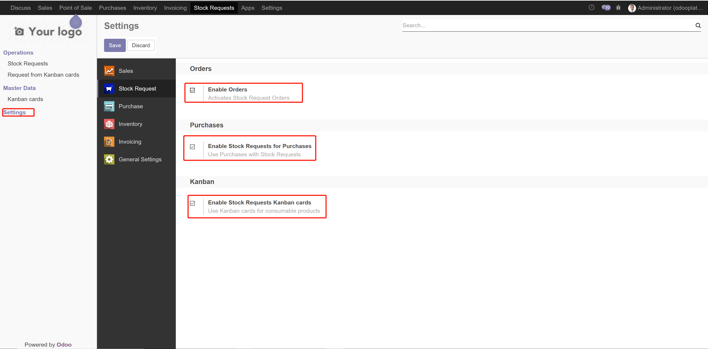
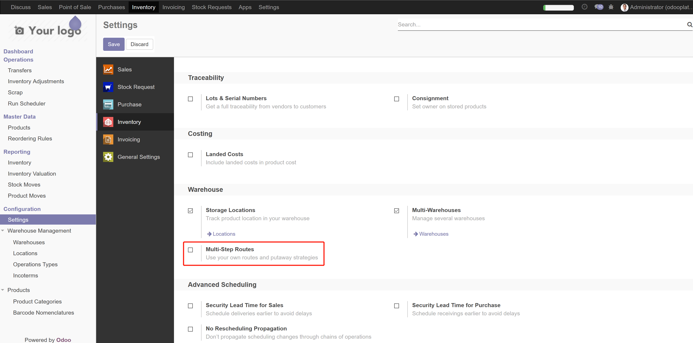
Now you can create routes that suit your needs. For instance, I will create a route, naming "TestRoute", with procurement rule that allow procurement from main warehouse to a shop warehouse.
For the "Action" field choose "Move From Another Location". "Procurement Location" should be "WH/Shop1".
"Source Location", choose "WH/MainWarehouse". And "TestOperation1" for "Operation Type", which I just created with the information in the picture.
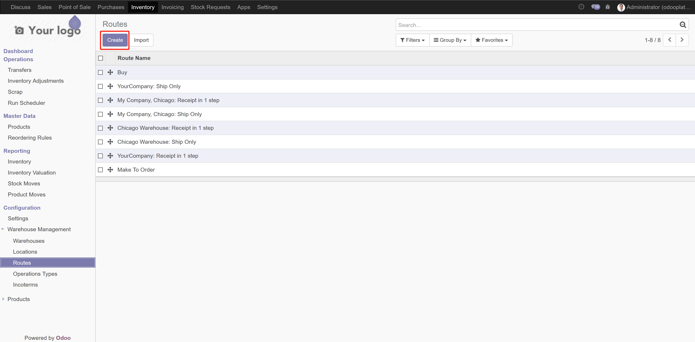
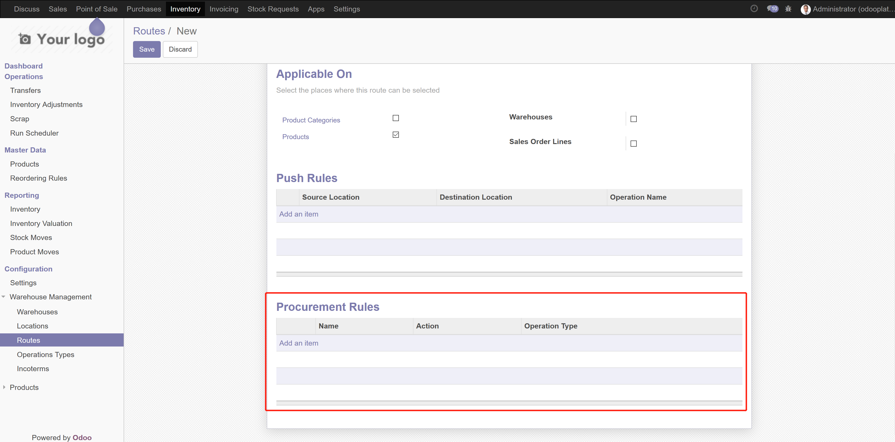
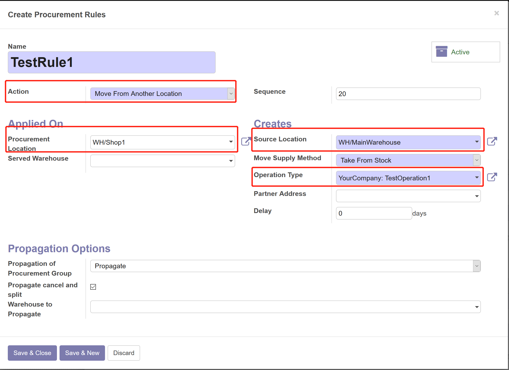
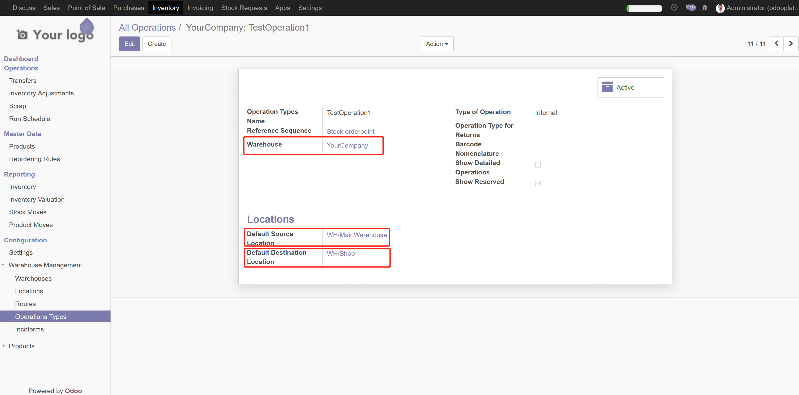
Open "Stock Requests - Stock Request Orders" menu, and create a new stock request order.
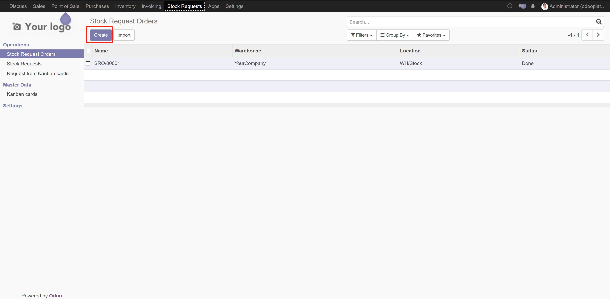
In this example, I choose a product with both routes "TestRoute" and "Buy"(which is odoo demo route). The routes you can choose for a product are depending on the warehouse and location you select for the order.
Because I choose warehouse "Your Company" and procurement location "WH/Shop1", the selectable route is "TestRoute".
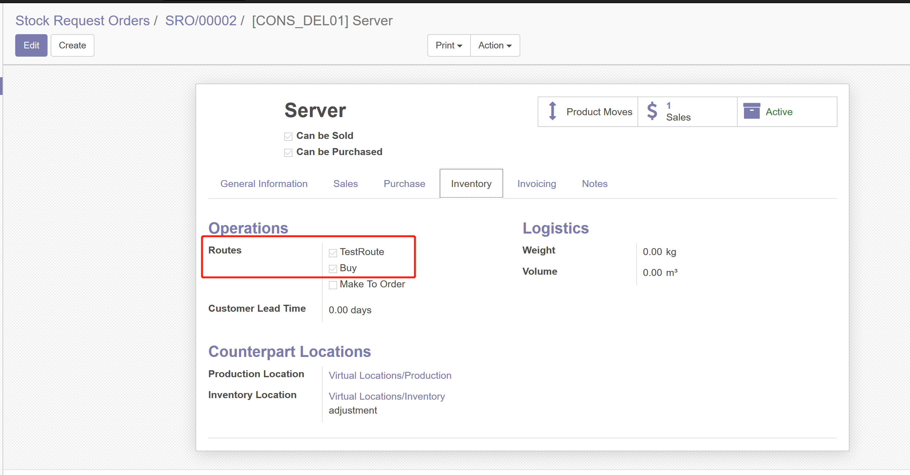
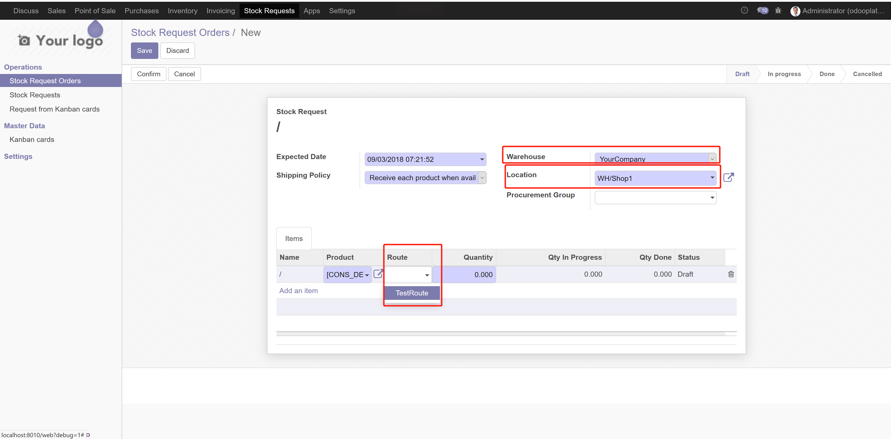
Then confirm. It will generate a move according to the route's setting.
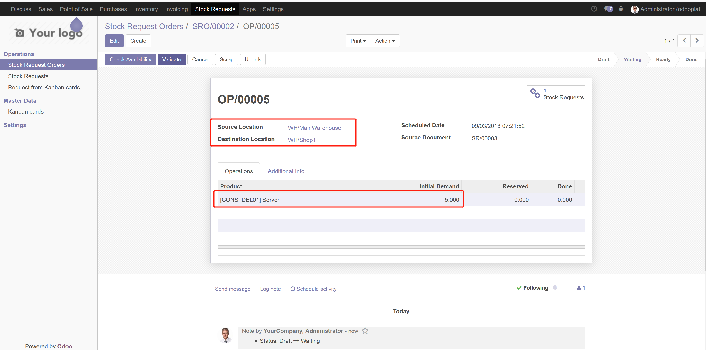
If you create another stock request order, and choose a product with routes "TestRoute" and "Buy", but with "WH/Stock" as procurement location. The routes you can choose will change too, and it is "Buy" now.
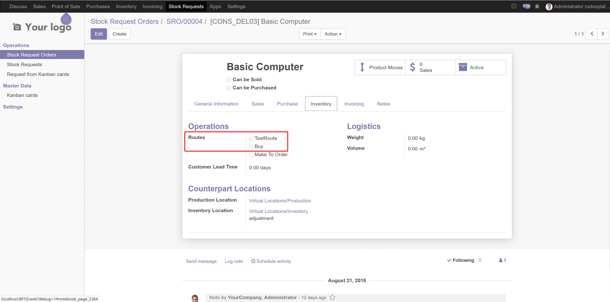
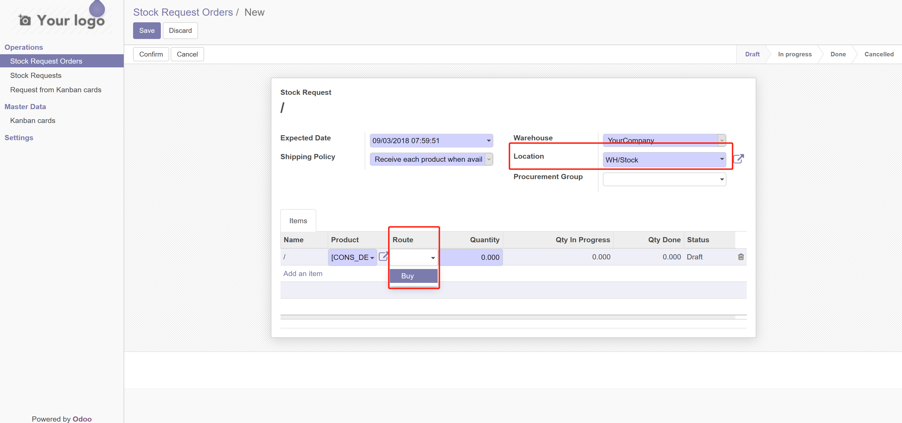
Then confirm, and it will generate a purchase line.
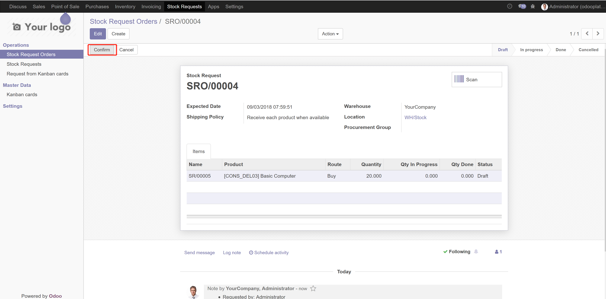
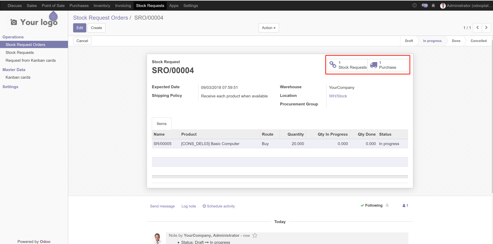
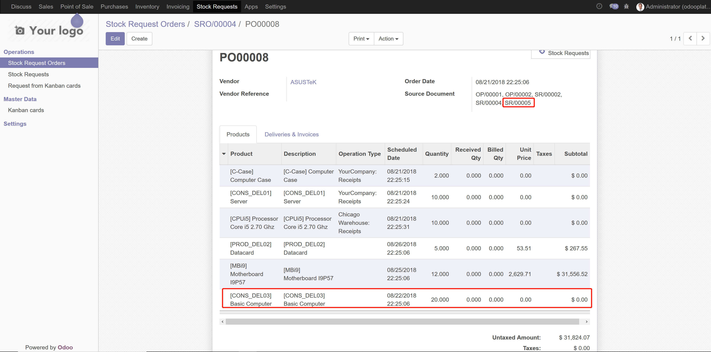
NOTE:We offers 30 days online
support from the date of purchase for all of our products.